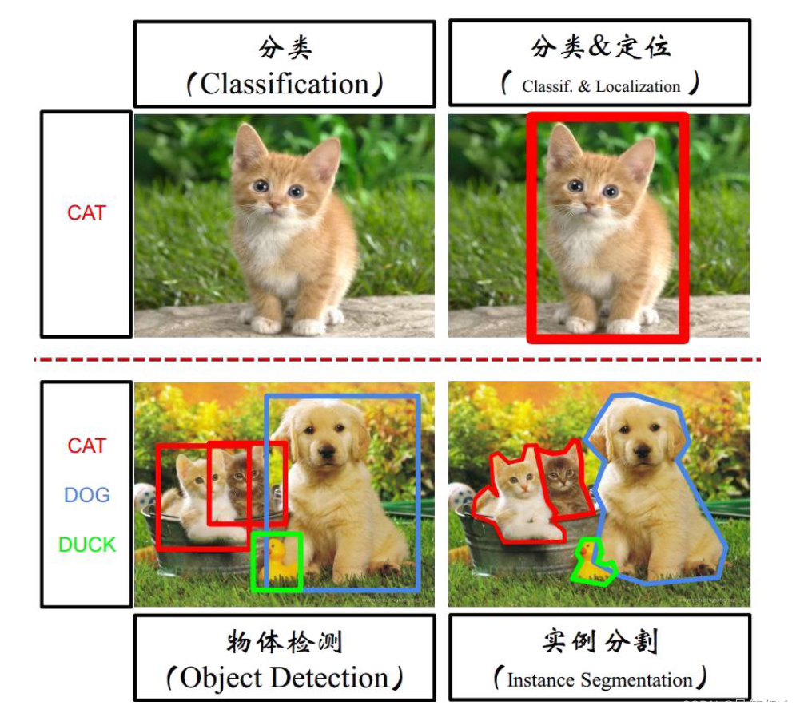
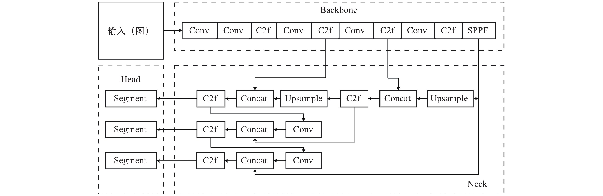
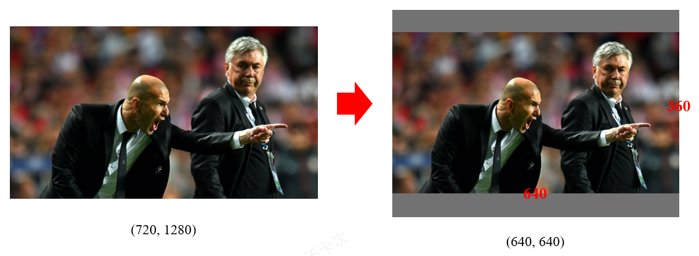
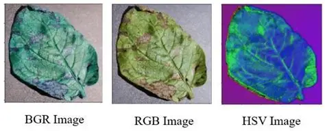
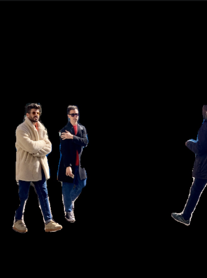
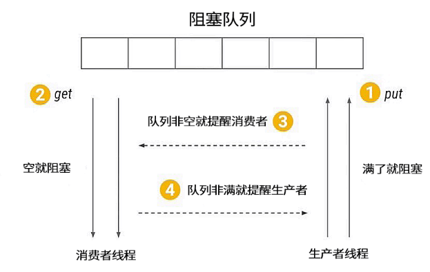
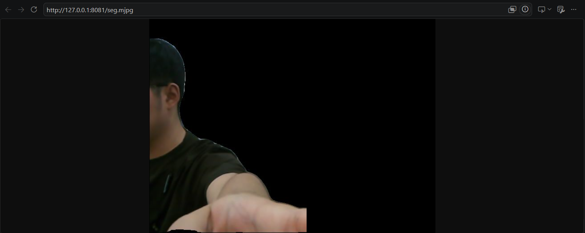

图像语义分割
从"框住人"进化到"抠出人"：YOLOv8n-seg 的 13 路输出里，32 通道 proto 与 32 维掩码系数一乘，像素级前景掩码就诞生了，再用 Alpha 合成把人贴到任意背景上。
01问题引入：为什么"框住"还不够？
直播绿幕能把你从教室里"抠"出来换成虚拟背景——这个需求靠矩形框永远做不到：框内既有你也有窗帘。语义分割回答的是逐像素问题：这个像素属于"人"还是"背景"？在机器人场景里它更关键：机械臂要绕开工人、巡检要统计仪表盘区域人流，都必须知道目标的精确外沿，而不是一个粗框。
本实验在实验箱 B2 上跑 yolov8n-seg 的 RKNN 版，实时输出 person 掩码并做背景合成。真正的难点藏在模型输出里：13 个输出张量、32 通道低分辨率 proto、掩码阈值的微妙平衡——差一档就"边缘碎成渣"或"人被啃掉一块"。
02原理通俗讲解：三十二张"透明胶片"
把掩码生成想象成洗照片叠底片。网络后段吐出 32 张模糊的小图（proto，160×160），每张都是一种"形状底片"；每个检测到的人则给出 32 个系数（mc，像 32 支颜料的配比）。把系数乘到对应底片上、全部加起来——一张只属于这个人的"透明胶片"就显影了：
3 层特征图 × [box 64 维 + cls 80 维 + cls_sum 1 维 + mc 32 维]，外加 proto [1,32,160,160]。cls_sum 先做粗过滤，省下大量无效计算。
mask = Σ mc[i] × proto[i]——这一步就是"按配比混合 32 张底片"，结果是低分辨率的单人热力图。
乘加结果还是无量纲的 logit，过一次 sigmoid 把它压成"属于人的概率"，画面上看着像慢慢显影。
概率 > 阈值 → 1（前景），否则 0。阈值太低边缘发毛带毛刺，太高人体被"啃"——它是本课最重要的手感参数。
160×160 的胶片要插值回 640×640 并摘掉 letterbox 的 pad，才能和原图逐像素对齐——用 NEAREST 会锯齿成马赛克。
I_out = I_orig × M + I_bg × (1−M)：M=1 处留人，M=0 处换景。多人掩码取并集即可一次合成。
03关联知识点
检测分支的 box/cls 解码、NMS（max_wh=7680 一次算完全类别）原样复用，掩码是新增的并行分支。
得到二值掩码后接 findContours，就能量测人体外接多边形、宽度，用于"能否通过"判断。
每个 worker 持有独立 RKNN 实例（NPU 多实例），流水线吃满 40~60 FPS。
绿幕抠像、隐私打码（背景整体模糊只留人）、电子围栏（人越界报警）都是本课直接延伸。
- 前置：EXP-01 的 RKNN 推理骨架与 NMS（直接复用工程结构）。
- 关联：图像金字塔的多尺度概念（3 层输出各管一段目标尺寸）。
- 出口：掩码可接 EXP-07 作为检测框来源，也可接 EXP-08 做深度融合。
04实验目标
05实验环境与准备
| 类别 | 内容 |
|---|---|
| 硬件 | 实验箱 B2（XFLZ_EAI_B2_PRO），HP60C 相机；YOLOv8n-seg 转出的 RKNN 模型 |
| 软件 | Python 3、rknn-toolkit 板端运行时、OpenCV（resize/插值/合成）、多进程 worker 框架 |
| 模型 | yolov8n-seg.rknn，输入 640×640，13 输出 = 3×[64+80+1+32] + proto[1,32,160,160] |
| 数据集 | 内置行人样例图 / 视频；classes=[0] person；另备一张背景图用于 image 合成模式 |
| 参数 | workers=3（每 worker 独立 RKNN 实例）、mask_thr 默认 0.5、max_wh=7680 全类一次 NMS、stream=seg.mjpg |
| 预览 | MJPEG :8080/seg.mjpg |
06动画讲解：13 路输出合成前景掩码
07互动讲解：mask_thr 掩码质量实验台
操作建议：把 thr 拉到 0.85 观察"啃块"警告，拉到 0.20 观察"碎渣/粘连"警告；再勾选两个错误开关，体会 pad 错位（整体位移）与通道互换（颜色诡异）这两类"不报错但看着不对"的坑。
08实操步骤
pytest tests/ -v tests/test_outputs.py ...... [ 8/38] tests/test_mask.py ......... [19/38] tests/test_compose.py ...... [30/38] 38 passed
python src/app.py --print-outputs --image samples/street.jpg out[0] box (1, 8400, 4) out[1] cls (1, 8400, 80) out[2] cls_sum(1, 8400, 1) # 粗过滤器 out[3] mc (1, 8400, 32) # 掩码系数 ... 3 scales x 上述 4 段 ... out[12] proto (1, 32, 160, 160)
# 1) 选中检测框对应的 mc 系数 mc = masks_sel[det_idx] # (N, 32) # 2) 系数 x proto 并按帧累加 —— 连续张量要 read + numpy prod = np.matmul(mc.astype(np.float32), proto.reshape(32, -1)) # (N, 160*160) # 3) sigmoid 显影 prob = 1.0 / (1.0 + np.exp(-prod)) # 4) 单人掩码上采样到输入尺寸（双线性；NEAREST 会锯齿） m = prob[i].reshape(160, 160).astype(np.float32) m = cv2.resize(m, (640, 640), interpolation=cv2.INTER_LINEAR) # 5) 摘 letterbox pad、再缩放回原帧、阈值化 m = m[pad_top:640-pad_b, pad_left:640-pad_r] m = cv2.resize(m, (W, H), interpolation=cv2.INTER_LINEAR) bin_mask = (m > mask_thr).astype(np.uint8) # 默认 0.5
# 多个 person 掩码取并集 foreground = np.zeros((H, W), np.uint8) for mk in person_masks: foreground = np.maximum(foreground, mk) # background: black / solid / image —— 核心是同一个 Alpha 公式 M = foreground[..., None].astype(np.float32) # (H,W,1) I_out = (img * M + bg_img * (1 - M)).astype(np.uint8)
python src/app.py --config config/seg_config.yaml --ros http://<board-ip>:8080/seg.mjpg fps=52 persons=2 mask_thr=0.50 bg=image
🛠️ 指导书步骤截图（实验指导书 · 6 图）






✅ 实验现象截图（实验指导书 · 2 图）

09重点与易错点
| 现象 | 根因 | 处理 |
|---|---|---|
| 掩码边缘碎渣、人身上有洞 | mask_thr 偏高 / 低分辨率噪声 | 调到 0.4~0.5，必要时形态学闭运算 |
| 掩码粘到背景、人"变胖" | mask_thr 偏低 | 提到 0.55~0.6 对照测试 |
| 掩码整体相对人下移 | letterbox pad 未摘除 | 按 pad_top/left 切片后再放大 |
| 合成脸发青/发红 | RGB 与 BGR 通道混用 | 全链路统一 BGR → 转一次并固定 |
| 掩码放大后马赛克 | 用了 INTER_NEAREST | 全链路 INTER_LINEAR |
| 浓度无效：第二个人没掩码 | 并集写成了"覆盖"或 NMS 后索引对错 | np.maximum 并集；核对 det_idx 映射 |
| NMS 后框数骤减/不变 | 忘了 max_wh=7680 全类一次处理 | 按官方写法一次性 NMS |
| 帧率掉到个位数 | workers=1 或同实例并发推理 | 恢复 workers=3，每 worker 独立 RKNN 实例 |
| MJPEG 404 | 端口/路径错 | 核对 :8080/seg.mjpg |
- ✅ 38 项单元测试全绿（含掩码尺寸、阈值、合成格式用例）。
- ✅ 黑底、纯色、图片三种合成模式各产出一张对照截图。
- ✅ mask_thr 三档（0.3/0.5/0.7）对照图 + 一句结论。
- ✅ 板端实时流稳定在 40 FPS 以上。
10总结与思考
13 输出解析 + 掩码融合 + 三种背景合成 + 实时流。
框走 box/cls 分支，掩码走 mc×proto 分支，最后在检测框上会合。
sigmoid、插值、pad 对齐、阈值，每一步都可单独排查。
主动制造 pad/通道/插值三类错误再复原，比只跑对一遍记得牢。